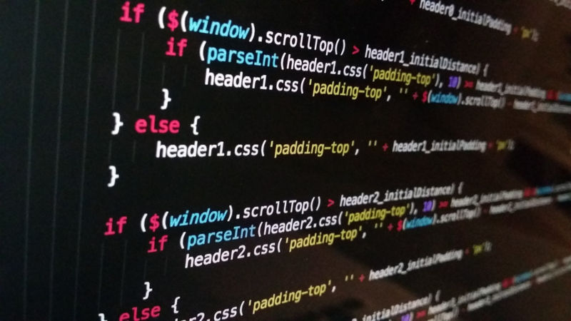
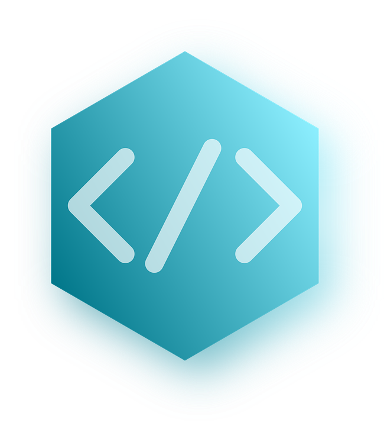

Último trabajo para el temario Introducción al Desarrollo Web. Los objetivos son crear una Gitpage contenedora de un Portafolio que debe mostrar las imagenes de los proyectos realizado hasta este punto y vincularlos con las páginas de cada uno y sus respectivos códigos.
Se clonó para generar un proyecto en local y trabajar en él. Se usan clases y componentes Bootstrap. También se recurre a Fontawesome para las figuritas presentes en ella. Se usa Grid, Card y clases Bootstrap.
Se usan algunos elementos CSS específicos para dar el efecto de papiro (scroll) con una imagen de fondo global y otra particular (efecto parallax).
Elaboración de un Curriculo básico, con imagen y una breve información personal.
Primer trabajo en donde se implementa CSS para ordenar los elementos visibles de la página. Se modifican los estilos y tamaños de las fuentes. Texto junto a las imagenes y un pie de página sencillo.
Manejo de otros elementos CSS, para colocar imagenes en la misma fila, y textos al lado de una imagen. También se usan estilo CSS para centrar el texto del título y dar color al fondo del body. Se incluyen tres iconos con fontawesome.
Trabajo en el que se implementa Bootstrap. En particular el manejo de clases como container, container-fluid, nav-bar y otras. Se incluyen componentes como Card y Form. También se usa Fontawesome para la inclusión de iconos.
Trabajo consistente en hacer un Fork a un proyecto de otra persona. Modificarlo, reemplazando la información dada, por datos personales.
Este trabajo consistía en crear una Gitpage en base a un proyecto anterior. En este caso se usó el proyecto1, contenedor del curriculo básico.
Trabajo consistente en elaborar una gitpage directamente en el sitio. Luego clonarlo y desarrollar un Portafolio como página principal. No contiene el botón Ver sitio, porque el resultado ya lo tiene ante sus ojos.
Fork al Proyecto 4 de la compañera LleniCastle, Vania Gómez. En el primero se agrega un área para mensajes y se separa el botón Enviar de los elementos anteriores. En el segundo, se aumentó la separación horizontal de los elementos Card. Sólo se incluyen los botones para examinar los códigos.
Este formulario no tiene todavía la funcionalidad que debería, por no tener desarrollado el Back End.